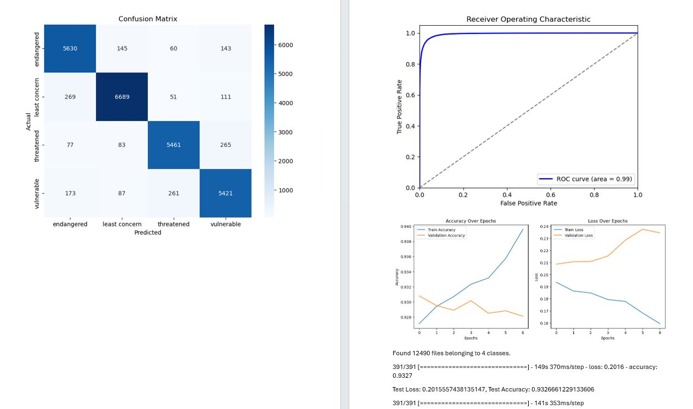

Hi 👋 I'm Chandan
INTRODUCTION
Overview.
My Work till date
Projects.
- 
Extracurricular Projects
Other Projects.
Get in Touch
Contact Me
Feel free to reach out through any of the platforms below.
INTRODUCTION
My Work till date
Extracurricular Projects
Get in Touch
Feel free to reach out through any of the platforms below.